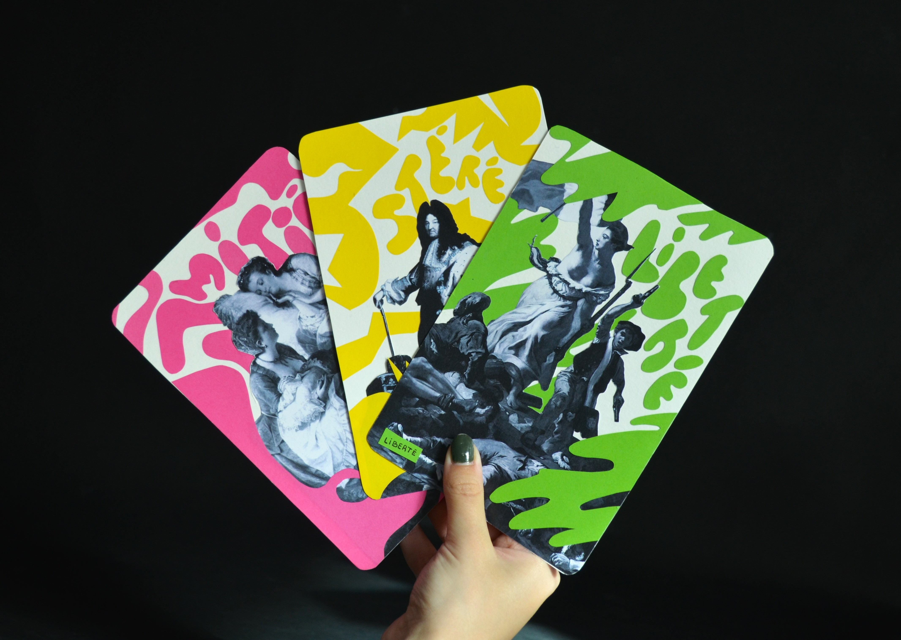
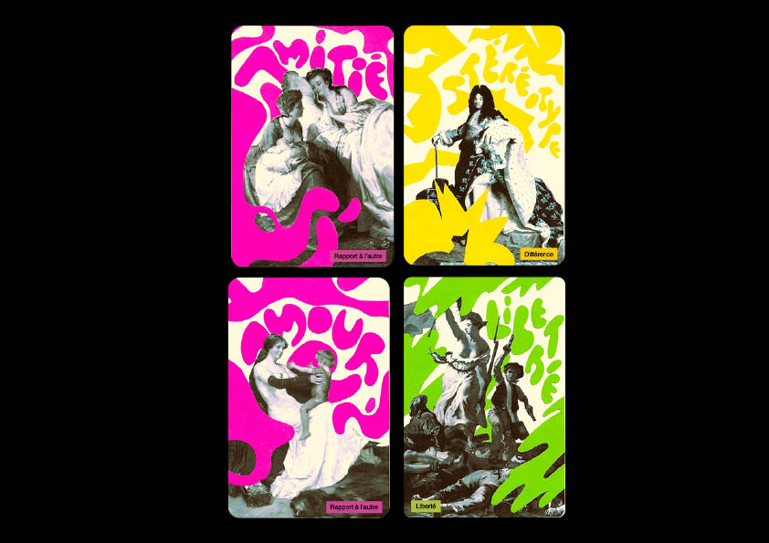
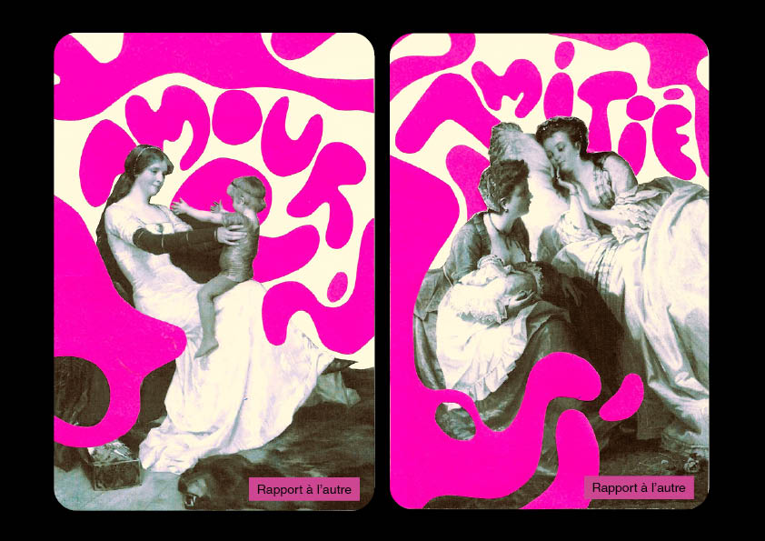
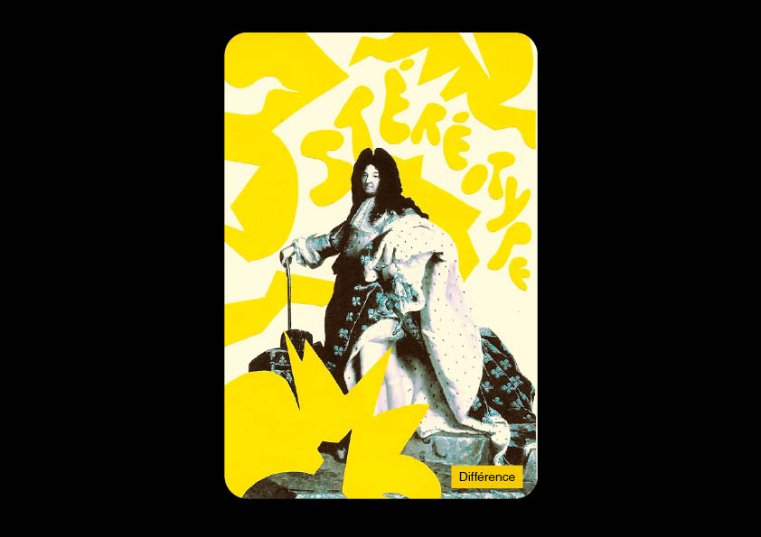
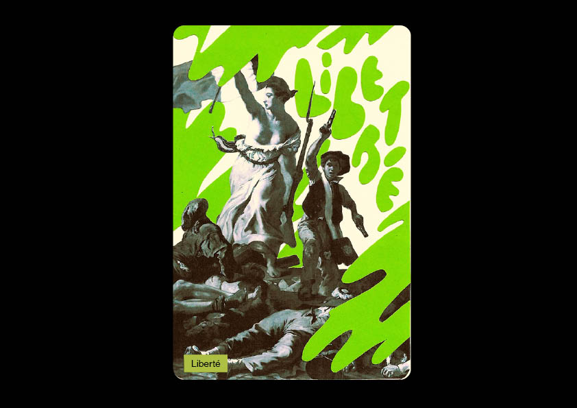
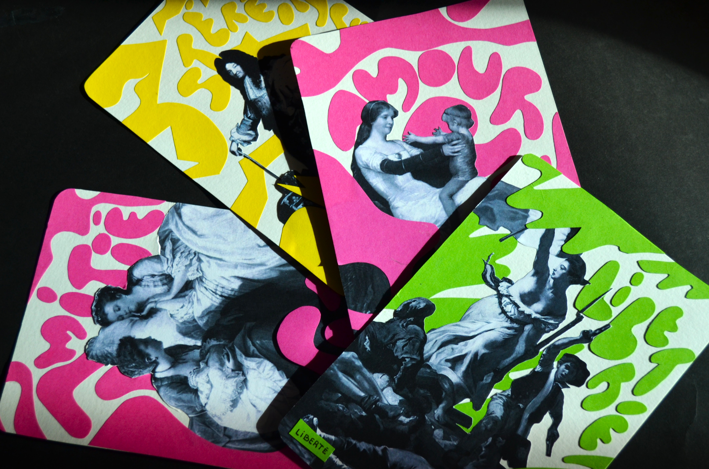

-CARTES PHILOSPHIQUES-
jeu de carte pour les enfants
mars 2025
Suite à une rencontre avec Chiara Pastorini, spécialiste de la philosophie expliquée à la petite enfance.
J’ai recréé les visuels du jeu «MON ATELIER PHILO», qui a pour but d'aborder certaines notions philosophiques avec des enfants. Chaque carte représente une de ces notions.
Pour ce qui est de la réalisation de ce projet, je me suis tournée vers l'art et reprendre certains tableaux donnant déjà corps aux notions. A la suite d'expérimentation plastique et de découpage, j'ai obtenu une collection d'un ensemble de cartes du jeu





